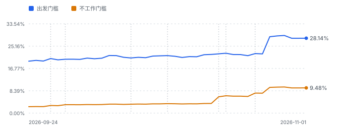
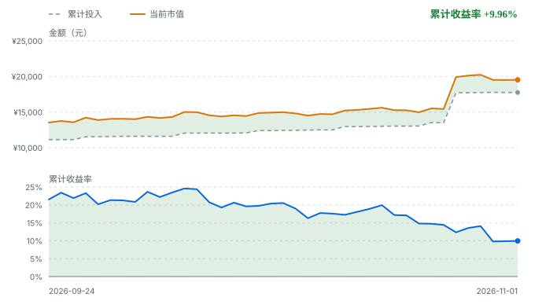

FIRE 进度
9.48%
¥19,527.60 / ¥205,953.49
更新于 2026-11-01 00:31 · 比特币快照 2026-10-25 （7 天前） · 基金净值日 2026-10-29
- 出发门槛
- ¥69,383.00–¥123,766.00
- 不工作门槛
- ¥205,953.49
- 当前资产
- ¥19,527.60
- 距离不工作门槛
- ¥186,425.89
- 不工作门槛完成度
- 9.48%
- 出发门槛完成度
- 28.14%
- 兼职净收入（月）
- ¥723.00
- 组合需覆盖（月）
- ¥738.00
进度曲线

资产构成
| 资产 | 市值 | 占比 |
|---|---|---|
| 比特币 | ¥14,101.37 | 72.2% |
| 标普500基金 | ¥937.36 | 4.8% |
| 纳指100基金 | ¥4,488.87 | 23.0% |
| 合计 | ¥19,527.60 | 100.0% |
只算长期不动用的钱，日常现金和活期不算。所以进度下跌未必是亏了，可能只是钱变成了现金。
投入与盈亏
| 累计投入 | ¥17,758.26 |
|---|---|
| 当前市值 | ¥19,527.60 |
| 累计盈亏 | ¥1,769.34 |
| 累计收益率 | +9.96% |
比特币本金按持仓备注的均价推算，用当前汇率折算，和真实买入成本有偏差。
收益曲线

月开销明细 · 牡丹江 · 单人 · 租房 · 极简
| 房租 | ¥500.00 |
| 取暖费 | ¥75.00 |
| 物业费 | ¥15.00 |
| 水费 | ¥12.00 |
| 电费 | ¥55.00 |
| 燃气/液化气 | ¥35.00 |
| 家电维修与更换摊销 | ¥20.00 |
| 网络与手机 | ¥30.00 |
| 食品 | ¥300.00 |
| 饮用水 | ¥15.00 |
| 日用品 | ¥22.00 |
| 交通 | ¥30.00 |
| 探亲与返乡交通 | ¥100.00 |
| 衣物 | ¥30.00 |
| 杂项（快递与小额） | ¥5.00 |
| 医疗自付预留 | ¥80.00 |
| 应急与物价缓冲 | ¥137.00 |
| 合计（17 项） | ¥1,461.00 |
一次性落地支出 ¥15,000.00，不计入月开销。
每小时被动收入
¥0.23 / 小时 · ¥168.14 / 月 · ¥2,017.73 / 年
按当前持仓和预期年化 10.3% 加权算出来的， 相当于月开销的 11.5%。
这是「资产平均在长多快」，不是「能花多少」。 按 4.3% 提取率算，同样这笔资产每月只有 ¥69.97。
外推
按「定投 + 资产增值」外推：日投 ¥86.03 （月 ¥2,580.86），叠加当前持仓按加权预期年化 10.33% 增长， 约 4.5 年 后达到目标（2031-04-16）。
区间：悲观 5.8 年 · 基准 4.5 年 · 乐观 3.7 年。差距全部来自收益率假设。